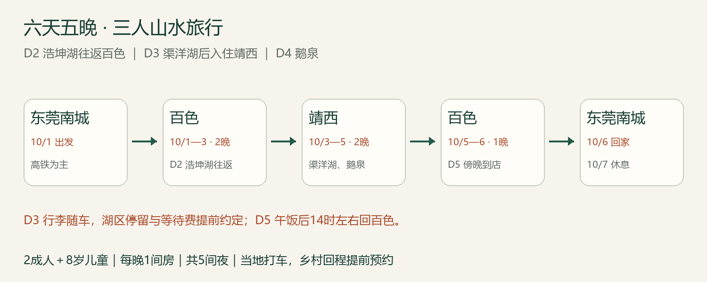
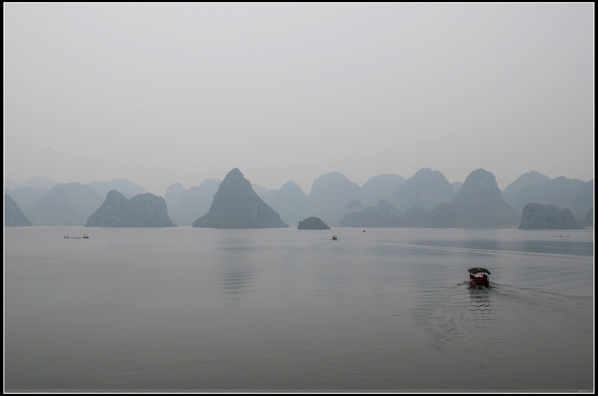
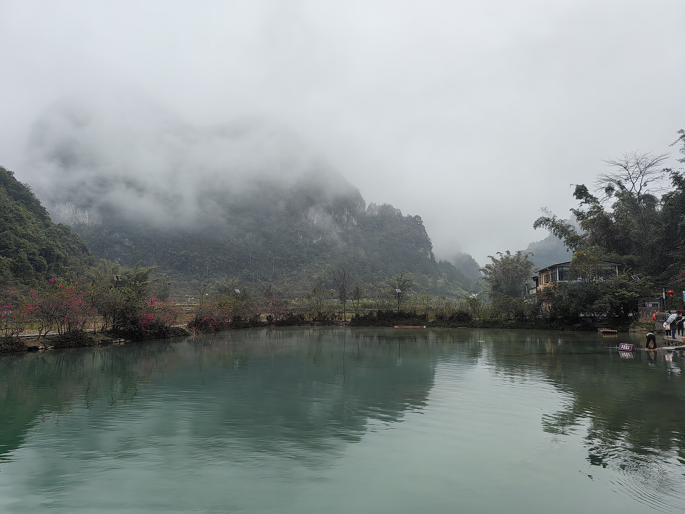
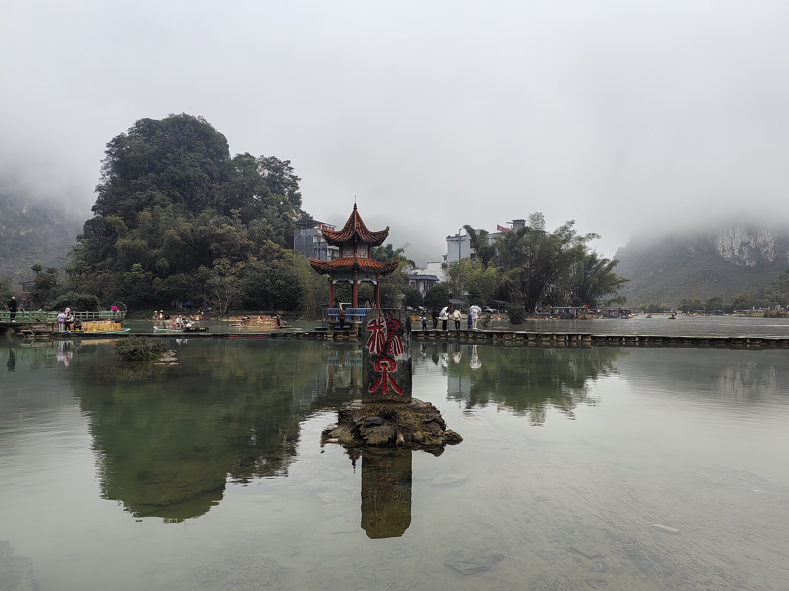

百色·浩坤湖·靖西：六天五晚，坐高铁去，当地打车游
建议日期：2026年10月1—6日；10月7日留在家休息。同行3人：2成人、1名8岁儿童；每晚1间房，共5间夜。 这是详尽规划审核稿，交通、酒店均未预订。路线与人数更新于9月17日；其余来源按各自核验日期记录；具体班次、国庆房价、景区临时措施仍须在预订时更新。
主线依次游浩坤湖、渠洋湖、鹅泉。当地打车为主，跨城和乡村接送提前预约；D2不退房，D3带行李游湖后住靖西，D5下午回百色，D6返程。住宿按最新要求改为每晚一间房。

六天安排，一眼看懂
| 日期 |
当天安排 |
住宿 |
| 10/1 周四 |
南城→西平西→番禺/广州南→百色，到店休息 |
百色，一间房 |
| 10/2 周五 |
08时出发浩坤湖，15时回程，约17时回百色 |
百色，同一酒店 |
| 10/3 周六 |
08:30退房出发，渠洋湖午餐及游览，约17时到靖西 |
靖西，一间房 |
| 10/4 周日 |
鹅泉慢游，午餐后约14:30回酒店 |
靖西，同一酒店 |
| 10/5 周一 |
上午休息，靖西午餐，14时左右回百色、傍晚入住 |
百色，一间房 |
| 10/6 周二 |
百色→广州南/番禺→西平西→南城 |
回家，无第6晚 |
所有时刻均为规划目标，不是已购票时刻或实时导航。国庆为10月1—7日，10月7日留在家休息；返程前一天住百色，避开当天跨城接车直接影响长途列车的风险。假期通知。
下载与使用
下载完整离线攻略 PDF。网页适合查导航与来源；每日PDF适合保存在手机里，出门只看当天。费用表中的金额均按全家3人计算，住宿明确按1间房计算；单人票价会另行标注。
为什么这样组合
三个山水景点各占一天：浩坤湖从百色往返，渠洋湖放在转往靖西的当天，鹅泉从靖西往返。D2行李留百色酒店，D3行李随车，需要明确保管和等待费；D4回靖西午休，D5午饭后离开。三名乘客坐一辆合规车辆即可，但行李容量仍需按车型确认。
公开国庆游记有鹅泉进村拥堵经历，因此保留早上出发和往返预约。它是历史个案，不代表2026年必然堵车。游客经历。
跨省交通：高铁优先，飞机留作替代
首选链条：南城住处→打车至西平西站→广东城际至番禺站→步行及安检进入广州南→动车至百色站→出租车到酒店。 这是门到门通常约8—10小时的出行日估算，已经把候车、转站和到店计入。广州南至百色既有动车页面显示约5小时级别；国庆车次未售时，不能把平日09:43等时刻抄成已确认班次。既有D3782时刻参考。
西平西至番禺既有快车约25—27分钟，站站停可能约1小时。应按实际能赶上的车规划，不能默认每一班都是快车。番禺出站到广州南还要走路、找检票区和安检；报道中的“1分钟”只是指定出口到东广场的局部距离。建议城际到达番禺与动车发车之间留90分钟，行李多或节日客流大再加余量。广东城际快慢车报道、番禺换乘说明。
两条备选：一是南城打车到虎门站，再乘高铁到广州南换乘，以能够买到连续衔接的坐席为前提；二是西平西接驳不理想时，提前评估直接预约车送广州南，但仍会受到广深通道拥堵影响。不要临近发车才在南城改路线。去程优选广州南上午约10—11时出发、百色下午约15—16时抵达的车；返程优选百色上午约10—12时出发，给广州南回东莞留白天余量。
飞机仅在实际查询到合适航班且总价、到家时间优于铁路时启用。需比较从南城到机场、提前到场、取行李、落地接车的总时间；飞南宁还要继续去百色或靖西。当前没有核实到适合本次日期的直飞组合，因此不列虚构航班号、机票报价，也不据此断言没有直飞。
买票日历与3人坐席
| 用车日 |
按通常15天预售期推算 |
操作 |
| 10/1去程 |
9/17 |
按12306具体车站与车次起售时刻查询、购票或候补 |
| 10/6返程 |
9/22 |
与去程分开处理，优先锁定返程 |
本家为2张成人票＋1张儿童优惠票、3个坐席。8岁儿童使用本人有效证件购票，至少与一位成人相邻；同订单不保证三连座。儿童优惠金额以实际票种规则为准，不能机械把所有成人折后价除以二。12306儿童规则。
当地打车：哪些随叫，哪些提前约
| 场景 |
执行方式 |
出发前必须落实 |
| 百色站、城区酒店和餐馆 |
正规出租车或平台叫车，预留15—30分钟候车 |
正式上客点、行李容量 |
| D2百色↔浩坤湖 |
往返预约两单，或同一合规接送方明确往返等候 |
正式入口、景交换乘、15时接回、等待费 |
| D3百色→渠洋湖→靖西 |
一程约定湖区停留，或两程预约都确认 |
约3小时游览午餐、行李保管、15时离湖 |
| D4靖西↔鹅泉 |
两程提前预约 |
正式入口与13:30回程点 |
| D5靖西→百色 |
下午点到点预约 |
14时酒店出发、百色酒店落客、高速与空返费 |
“打车”为主不等于偏远湖区能随叫随走；无需租车，但跨城及乡村必须预约。报价看含高速费、停车、等待与返空的总价，保留正规订单。普通五座车载司机＋3名乘客，人数可容纳；箱子仍需提前说明。按儿童身高和产品要求配置合适安全约束，预订时询问是否有适配儿童座椅或增高垫，不假定车辆自带。
可复制的询价文字：“我们2成人、1名8岁儿童，共3位乘客，行李为实际箱数。10月3日百色酒店出发，11:30左右到渠洋湖正式接待点，午餐和游览约3小时，15时离湖去靖西酒店。请报含高速、停车、等待和返空的总价，确认车型、行李保管、合法上客点及取消规则。”攻略没有替你发送信息。
全程道路用车预留
| 项目 |
全家预算 |
| 南城↔西平西两次 |
60—140元 |
| 百色站接送及城区短途 |
180—320元 |
| 浩坤湖当日往返 |
600—1,000元 |
| 百色→渠洋湖停留→靖西 |
800—1,200元 |
| 靖西→百色 |
450—750元 |
| 靖西↔鹅泉 |
180—300元 |
| 靖西市内及调度余量 |
130—290元 |
| 合计 |
2,400—4,000元 |
以上全为询价占位，不是运价表或已确认报价；三人乘一车与三人乘一车不应机械打七五折。报价超区间时更新预算、比较正规车辆，不默认删掉已经选定的湖区。
住宿：位置和休息条件先于星级
建议百色选择龙景/万景城一带便于用餐和车辆接送的酒店；靖西选幸福路/幸福广场附近，城区餐饮步行或短程车可达。两城都尽量住可直达大堂、有电梯的正规酒店。10/1—3百色2晚、10/3—5靖西2晚、10/5—6百色1晚；最后一晚回同一家，减少重新熟悉环境的负担。
| 城市与候选 |
为什么放进清单 |
下单前特别核对 |
| 百色：梦之源大酒店（万景城不夜街店） |
龙翔路5号；吃饭便利，适合打车出入；平台列洗衣与电梯 |
街区夜间可能热闹，要求远离娱乐楼层、非临街安静房；老楼层装修与潮味现场检查 |
| 百色：温德姆度假酒店 |
环岛一路8号；适合重视酒店内休息空间的家庭 |
园区与走廊可能较长，要求主楼近电梯；餐饮与市区出行合计成本更高 |
| 靖西：维也纳国际酒店（幸福路店） |
幸福路101号；平台列2025年开业，适合城区作为据点 |
不能把开业新等同于无噪音；确认临街朝向、洗衣排队、电梯到房间距离 |
| 靖西：维也纳国际酒店（长丰国际店） |
另一较新的品牌候选，有较完整公区条件 |
与同片区其他酒店区分清楚；去常用餐馆是否又需车，确认夜间接车位置 |
以上均为候选、没有选定房型或国庆库存；不以平台默认日期的价格充当10月报价。梦之源、百色温德姆、靖西幸福路维也纳、靖西长丰维也纳。
每晚一间可接待2成人＋1名8岁儿童的房间，优先询问家庭房或床宽合适的双床房，不默认普通大床房可舒适住三人。下单前核对允许入住人数、每张床宽、是否需加床及费用、儿童早餐、无烟与浴室防滑。按每晚450—800元暂留，5间夜共2,250—4,000元；家庭房或加床实际价格可能更高，以国庆报价更新，不设硬上限。
梦之源平台早餐参考07:30—10:00，成人38元；幸福路维也纳参考07:00—10:00，成人38元；温德姆参考07:00—10:00，成人68元。儿童收费按酒店身高档，8岁不自动免费。订一房先核对订单究竟含几份早餐，早餐不含部分放入餐饮预算，避免重复算。10/6若早车，前晚询问打包早餐能否提供。
门票、预约与年龄优惠
| 项目 |
本家处理 |
出发前核对 |
| 浩坤湖 |
2成人＋儿童分别查票种，门票、景交、游船逐项问 |
平台停船公告与8月媒体运营消息不一致；按最新景区答复执行 |
| 渠洋湖 |
岸边接待条件先确认，游船可选 |
实际航线、时长、遮阳、儿童救生衣、末班及三人总价 |
| 鹅泉 |
只查鹅泉使用日票种，不买其他景区组合 |
儿童按实际年龄／身高规则，竹筏是否另外收费 |
所有景区优惠均不能直接套用铁路儿童规则，8岁不代表所有景点免费。全程门票体验预留400—900元，包括门票、景交及酌情选一次正规水上体验；不是两湖游船和鹅泉竹筏全部打包报价，若都参加需另行合计。
浩坤湖平台信息、渠洋湖、鹅泉。
三人全家预算
| 类别 |
六天五晚预留 |
计算口径 |
| 铁路与城际 |
1,900—2,500元 |
2成人＋1儿童往返二等座，含广东城际 |
| 住宿 |
2,250—4,000元 |
5晚×1房＝5间夜；三人同住一间 |
| 餐饮 |
1,400—2,200元 |
6天热饭与特色小吃，已含早餐不重复 |
| 出租车与预约接送 |
2,400—4,000元 |
新增浩坤湖往返，含其余全部道路接驳 |
| 门票与体验 |
400—900元 |
门票、景交及酌情一次正规水上体验 |
| 水零食用品 |
150—300元 |
不与正餐重复 |
| 备用金 |
1,000—1,500元 |
调车、改期和价差，并非必然支出 |
| 合计 |
9,500—15,400元 |
三人总额，含备用金，无已支付费用 |
没有固定预算上限；以上为了询价比较，不是实际成交价。儿童票、早餐规则、酒店库存和跨城报价确认后再更新。路线固定为六天，不另加第七天景点。
看完社区经验，哪些值得保留
- 浩坤湖网红山顶视角与湖岸线不同，按正式入口和孩子体力走短线；狭窄山路、不明免费入口不作为导航目标。
- 渠洋湖游船评价分歧较大，先确认遮阳、航线和候船时间；喜欢安静观景可以坐，孩子不愿坐则岸边走走。
- 鹅泉先辨明门票与竹筏票，不为无人桥面久等，不把春季花海当十月景色。
- 湖区回城车辆提前落实，历史“有人顺路带回”不能证明国庆运力。
- 餐馆评论少或年代旧时，只留作候选；到店先问营业、出菜和份量，三人从两菜一汤或三菜起点，不照搬多人团餐。
以上为本家规划取舍。可见公开评论与游记均注明来源；未登录小红书、抖音，未把搜索摘要当完整视频体验。
行前复查与随身清单
9/17：查去程起售时刻和余票／候补，核对3位乘车人；浏览每晚一房可退库存。9/22：查10/6返程。9/28—30：按实际日期复核景区、天气、两城酒店、D2和D3湖区接送、D4回程及D5跨城车。每天前晚：核对次日订单与入口。没有创建自动提醒。
天气按出发前7天趋势、前48小时预警和当天景区公告更新。两湖与鹅泉遇雷电、强降雨、停业时取消室外活动，不自动替换成纪念馆，不压缩D5回百色与D6返程缓冲。
随身带3人有效证件、日常药品、轻雨具、防滑鞋、防晒用品、充电宝、水、少量点心及儿童替换衣物。孩子在水边由一位成人明确照看；另一位负责订单与行李，换车重新点数三人及全部包。本人证件、订单、司机私人信息只存私人手机，不写进共享网页。
待补齐：准确车次、一间房房型与退改、儿童身高及景区票种、每程司机确认和集合点。紧急求助120／110，普通出行问题先找景区服务台、酒店或平台。
经验信息怎么用
本攻略结合官方线路、运营公告、OTA景区和酒店页面、公开游记与可见评论，形成上述安排；没有登录小红书或抖音账号，也没有把搜索摘要当作完整视频体验。旧无车游记能提示接驳问题，旧票价与班次不沿用。渠洋湖船务评论有好有坏，不能由少数样本推断所有经营者；酒店个别潮味、排队评论只变成订房核对项。详细来源和适用日期保存在研究记录中，平台促销、错地名“鸡西”、野路逃票及“广州南到靖西只需3小时”等不可靠内容均不进入执行路线。
每日行程
D1 · 10月1日 周四｜东莞南城到百色
今天只完成顺利到店。 建议广州南10—11时左右发车、百色15—16时左右到达，以下按约10:30出发、15:30抵达的目标推演，不是已售车次。住百色一间房，第1晚。步行主要在车站，约1.5—3公里估算；行李上下电梯比“景点距离”更影响疲劳。
- 1
- 出租车约20—40分钟
- 2
- 城际快慢车约30—70分钟另含候车
- 3
- 动车约5—6小时，票面优先
- 4
- 出租车含候车约30—60分钟
- 5
路线示意，不按地理比例；地图链接为名称检索，需确认实际入口和上下车点。时长为规划估算，不能替代票面或实时导航。
行程时间轴
| 时间 |
安排 |
移动与执行 |
| 06:30—07:10 |
早餐、最后检查 |
证件由一成人集中核对，儿童带好小水瓶 |
| 07:10—07:40 |
南城→西平西站 |
预约出租车；30分钟仅作南城内接驳预算，按住址重算 |
| 07:40—09:00 |
城际到番禺 |
选实际班次，预留候车和快慢车差异；目标09:00前到 |
| 09:00—10:30 |
番禺→广州南候车 |
按指示出站、步行、铁路安检；留约90分钟衔接 |
| 10:30—15:30 |
动车到百色 |
时间示例；午餐车上解决，轮流照顾儿童与行李 |
| 15:30—16:30 |
出站、打车、办理入住 |
先上洗手间，沿出租车指引到正规候车区 |
| 16:30—17:30 |
一间房休息 |
检查热水、卫生间、噪音；不急着出门打卡 |
| 17:30—18:30 |
酒店附近晚餐 |
有座、出菜快优先，排队超过20分钟换店 |
| 19:00—20:30 |
整理明日物品、早睡 |
如不累，只在酒店附近短走15—20分钟 |
打车与导航
出发前在地图搜“东莞西平西站”，不是“东莞西站”。城际目的地是“番禺站”，长途票出发站是“广州南站”；两者换乘不能直接当同一个站台。百色站出站后按现场出租车/网约车上客区指示，避免在车流中边走边改定位。
到百色候选酒店：梦之源大酒店（百色万景城不夜街店），龙翔路5号；若改温德姆，用订单全名替换司机目的地。普通五座车可载本家3名乘客，把箱数提前告知。当天广西接站费和南城送站费可预留60—130元，已包含全程交通总盘；站点和酒店改变需重算。
社区经验延伸：落地先把休息条件落实
旅行笔记里，小飞在2025年4月行程中遇到过酒店开窗进蚊，夜间影响睡眠；这不是本攻略候选酒店的投诉，也不能推断当地酒店普遍如此，只提醒我们抵达当天做一次简单检查。原游记。
办好一间房后，两位成人分头检查纱窗、空调、浴室和噪声，不合适当时联系前台；孩子先坐休。
晚餐先问“多久上第一道热菜、鸡鸭是否整只起卖、有没有小份”，主食和蒸蛋或豆腐先上，其余慢慢加。到店后赶夜市不是必做项目。
前台顺便问好明天早饭开放时间、出租车正规上客点、能否协助预约10/3跨城接送；对方只能帮忙询价时，就继续等明确承运确认，不把“可以帮你叫”理解成订单已落实。
当天美食
午餐：换乘前备好主食，动车上吃盒饭或自带便携餐；全家预留90—140元。晚餐首选候选是壮家人·壮家菜龙景店，平台地址锦绣路76号；适合住万景城/龙景片区时短程过去，3人点一份肉菜、一份豆腐或蛋、一份青菜、一份汤再加主食，预留160—240元。点菜先问鸡、鸭是否整只起售和出菜时间；有游客反馈分量较大、鸡类等待较久，别一次点太满。
备选就是酒店餐厅或楼下有座热饭馆；如落地晚或孩子累，直接启用，不为店名多叫一趟车。希望不辣是规划上的便于全家分享建议，尚未确认个人忌口，点菜时说明辣椒另放、不要默认为当地“微辣”等于不辣。餐厅页面。
看点与现场提醒
这一天的体验是从珠三角城市群进入桂西，不追求落地后再赶博物馆。长途车上可让孩子看窗外山地和平原变化，约定到站前30分钟收好平板、玩具和外套；不用安排必须完成的学习任务。长途乘坐可在安全条件下适当起身活动，靠近厕所或过道的座位需求以实际选座为准。
车站便利食品适合当午餐补充，但全家不要只吃零食。上午就备好主食、水和纸巾，避免换乘时间不足时临时分头排队。动车晚点抵达18:00以后，就在酒店或楼下吃饭，取消散步和特色餐厅。
酒店入住清单
房间优先方便到电梯，需安静而非最靠电梯门；先查看浴室是否有积水、防滑垫是否可用、空调和插座是否正常。确认早餐从几点开始、房价包含几份、儿童是否加价。百色后天退房、10月5日回来再住一晚，可以请前台记下安静房的偏好，但不能把“申请”当成保留房间。
晚点、天气与删减
出发前48小时关注广东天气与铁路运行消息；大雨时提前出门，车站内换乘不依赖室外奔跑。若买到广州南更早的车，倒推至少90分钟到番禺，必要时改为虎门接高铁或直接预约车送广州南，而不是压缩到危险换乘时长。买到下午动车，D1顺延并只保晚餐休息，D2照常。
今晚确认：浩坤湖10/2开放、当天正式入口、船务与景交状态、往返两程车及15时接回时间。大行李留酒店，不退房。
依据：广东城际换乘说明、列车时刻参考、12306儿童规则。
D2 · 10月2日 周五｜浩坤湖一日，回百色住
百色酒店出发，当天回同一家酒店，不退房、不搬大行李。 2成人、1名8岁儿童，住百色第2晚、一间房。今天以正式景区的湖岸观景、廊桥和坐休为主；步行约2—4公里为可缩短的规划量，不安排猪笼洞、天门山登顶或山脊大环线。
- 1
- 预约车约1.5—2小时，实际入口待确认
- 2
- 15:00预约接回，约1.5—2小时及路况弹性
- 3
路线示意，不按地理比例；地图链接为名称检索，需确认实际入口和上下车点。时长为规划估算，不能替代票面或实时导航。
行程时间轴
| 时间 |
安排 |
移动与执行 |
| 07:15—08:00 |
酒店早餐、整理日包 |
大箱留房内；带水、点心、雨具和儿童替换上衣 |
| 08:00—10:00 |
预约车百色→浩坤湖 |
预留约1.5—2小时及国庆弹性；正式集散点由司机当天确认 |
| 10:00—10:30 |
购票、景交与洗手间 |
问清当天开放岸线、回程末班景交、船务状态 |
| 10:30—11:45 |
廊桥与核心湖岸短走 |
每走20—30分钟可停下来；不追求完整环湖 |
| 11:45—13:00 |
正式经营区午餐、坐休 |
餐馆提前问营业与出菜；不是回酒店午睡 |
| 13:00—14:15 |
湖边观景、可选正规游船 |
船停运就继续岸边短线；排队长则不坐 |
| 14:15—15:00 |
向出口返回、景交与接车 |
至少留30—45分钟找出口与候车余量 |
| 15:00—17:00 |
预约车返回百色酒店 |
不等日落；堵车先取消晚间逛街 |
| 17:00—18:00 |
回房休息 |
同一家酒店第2晚，一间房 |
| 18:00前后 |
酒店片区晚餐 |
有余力才短程去文明街吃小吃 |
打车与导航
去程和回程必须在出发前同时落实。 可在正规平台预约往返两单，或让合规接送方把往返、等待、停车与高速费写进总价。不是租车自驾，也不默认景区门口随叫随走。全家此日道路接送预留600—1,000元，属于国庆询价占位，非实时报价；景交、门票另列。
目的地说清“凌云县伶站瑶族乡浩坤湖景区，当天开放的正式游客集散入口”，不要发网红山顶观景机位。过去资料出现坡贴集散中心、浩高区域等不同位置，须让接送方确认现在私家运营车辆能送到哪里、是否换景交、末班时间。到达时拍合法上客点照片，返回约同一点，14:00再次联系司机。景区网站也提示部分山区网约车稀少，不能由地图上的可叫车图标推断已有人接单。
当天美食
早餐在酒店；午餐在浩坤湖正式经营区，三人预留130—200元。暂未核实可靠具体店名，前晚让接送方确认有座位、洗手间、清楚菜单和当日营业。先点一荤一素加蛋或汤，鱼要先写明单价、重量与加工费；不把村内任意民宿都当随到能吃饭的餐馆。
晚餐回百色酒店片区，三人150—220元。若17时左右回到酒店且精神好，可短程去文明街尝卷粉；累了就在楼下吃。候选三和卷粉（平台文明街42号）先点一两份分享，问馅料、酱汁能否分开；平台评价少，不写成必吃。梁氏炖品（平台文明街52号）可见评价多为2019—2020年，页面列17时开门，营业存续需当天确认，排队就放弃。
三和卷粉、梁氏炖品、2019文明街食记。旧食记可用于了解卷筒粉现蒸米皮、包馅的形态，不沿用旧价。甜品三人40—60元以内按需分享，计入全程餐饮预留。
看点与现场提醒
重点看峰林层次、湖湾、廊桥倒影和岸边村落。先在游客中心拿当日导览，只选开放的湖岸核心区域，按孩子状态走一段后折返；玻璃桥是否愿走现场决定，不把过桥变成任务。给孩子一个小观察：同一片水在阴影与阳光下颜色有什么不同？不要追着水边动物跑，不下水。
景区网站把核心湖岸与探洞、山顶徒步分别列线，其中猪笼洞涉及垂直洞穴和竹梯，弄外屯相关山路陡窄、完整徒步耗时长。网上山顶俯拍不等于这条轻松湖岸线随手能拍到。 本次不为复刻机位改去高山入口；沿途看到临时封路或积水，折返即可。路线指引。
社区经验与船务冲突，怎样落实
携程可见评论中，“钟灵毓秀”提到网上有大量免票自驾攻略，但本人选择购票游览；“立夏0327”认为景色多样，同时提醒部分道路狭窄、会车困难。这两条页面未展示发表日期，只作为入口和道路核对线索，不能证明国庆管制或具体票价。公开点评与开放信息。
9月17日查询时，携程仍显示“游船停运”公告；8月17日广西新闻网转述的景区消息则称部分船型停运、单层游船等项目可运营。来源时间和覆盖项目不同，当前不能据此确认10月2日一定有船。 主行程即使不坐船仍成立。9月28—30日及出发前晚再问景区：具体哪种船开、从哪一码头上下、航程多久、儿童救生衣是否合身、几点停售；不要只问一句“开不开”。8月17日报道。
平台参考开放时间08:30—17:30、17:00停止入园，不能当国庆承诺；本家15:00离开仍需先核对景交末班。平台的“58元起”不说明对应人数、日期或套餐，不作为本家已确认门票价。2成人与8岁儿童分别查实际票种；景交和船票是否包含逐项确认，不按年龄自行判定景区免票。
照片怎么参考
可看浩坤湖景色页面及上方携程游客实拍来辨认湖景与山顶视角；图片许可未核实，因此这里保留原站入口，不把照片下载后冒充自由使用素材。攻略内渠洋湖、鹅泉已插入带许可与拍摄日期的真实照片。水色、水位和天气均以出行同周信息为准。
雨天与接车失败
普通小雨只走正式开放短线；雷电、强降雨、停业或道路预警时取消当天湖区，留百色休息和用餐，不改回纪念馆参观。回程司机取消时留在游客中心或有座餐馆，通过平台、酒店或景区协助安排合规车，不带孩子走到偏远公路碰车。当天不把“现场有人说可以接”当落实。
今晚核对D3百色→渠洋湖→靖西的全程接续与等待费、靖西一间房保留到店时间；两只箱子整理好，明早退房。
D3 · 10月3日 周六｜渠洋湖游览，傍晚入住靖西
渠洋湖是今天的主要游览，不再只是顺路停一小时。 早餐后退房，行李随预约车，中午和下午在湖区，傍晚入住靖西第1晚、一间房。总道路移动约180—230公里、4—5小时为保守估算，入口与当天导航可能改变结果；湖区留约3小时含午餐，步行约2—3公里可缩短。
- 1
- 仅天气预警、停业或接续无车时兜底直达
- 约3小时含休息，实时导航复核
- 2
- 湖区约3小时含午餐，再预留约2小时到酒店
- 3
路线示意，不按地理比例；地图链接为名称检索，需确认实际入口和上下车点。时长为规划估算，不能替代票面或实时导航。
行程时间轴
| 时间 |
安排 |
移动与执行 |
| 07:30—08:30 |
早餐、退房 |
一房逐一检查，洗手间，行李计数 |
| 08:30—11:30 |
百色→渠洋湖正式接待点 |
3名乘客，途中休息15—20分钟；路况需重算 |
| 11:30—12:30 |
湖区午餐 |
确认餐馆营业与座位，不在大太阳下等菜 |
| 12:30—13:00 |
阴凉坐休、看湖 |
午间不安排登高或整圈步行 |
| 13:00—14:30 |
正规游船可选／岸边分段观景 |
含检票候船余量；船务不明确就走岸线 |
| 14:30—15:00 |
洗手间、补水、接车 |
回到事先约定的上客点 |
| 15:00—17:00 |
渠洋湖→靖西酒店 |
不追夕阳；遇堵先保入住与晚饭 |
| 17:00—18:00 |
一房入住、洗澡休息 |
提前通知酒店大致到店时间 |
| 18:00—19:00 |
靖西晚餐 |
酒店周边有座餐馆，饭后自由休息 |
两种执行方式，出发前二选一
A：一辆合规预约接送车，事先约定途中停留。 司机明确知道不是单纯直达订单，书面确认湖边停多久、在哪里等、午餐是否计等待、总价含哪些费用。以能合法停靠、有厕所和明确接待人员的入口为目标；“坡谷汽车露营地”只能作为与司机核对的候选接待点，不保证当日营业或无门槛进入。
B：两段分别预约。 第一段百色酒店→湖区正式上客点；第二段同一上客点→靖西酒店。必须在百色上车前拿到两段确认，分别设置时间并留30—45分钟弹性，不在湖边临时叫远程车。第一段提前到，不等于第二段也能提前来；先联系确认再改变时间。
正常安排是游渠洋湖；仅在天气预警、停业或A/B都无法落实时启用兜底，直接百色→靖西：08:30出发，约11:30—12:30到，先吃午饭，酒店到点入住；未到入住时间请寄存行李，不能假定上午就能拿到一间房。下午睡醒后在城区短走，渠洋湖从本次行程中删除即可。
游客经验落地：渠洋湖不必追整圈
公开体验有明显分歧：携程2026年7月18日游客认可有遮阳的游船，7月31日和8月2日则有对船务服务的不满；2024年12月另有游客反映实际航线比展示短。不能由这些个案判断所有船或每个班次。渠洋湖评论页。
痞客邦作者小飞记录2025年4月20日团队行程时，觉得约一小时坐船偏单调、晒；这也提示，喜欢安静看山水与喜欢密集体验的人，感受可能完全不同。小飞的渠洋湖、鹅泉游记。
对本家的具体安排是：
- 岸边短停先问接待条件。 让接送方确认当天可进入的正式接待点、座位与厕所；不是任意一个“湖边定位”都能下车和休息。没有确认，就走直达靖西分支。
- 不以整湖为步行目标。 湖岸短走20—30分钟，找一个能看到峰林层次的视角，坐下喝水再决定是否继续。拍好一张合影即可，不沿岸追每个网上机位。
- 行李与等待时间写进订单。 带行李停湖时，问清司机是否等候、等多久、超时怎么算、行李是否留车。若是分两段车，第二段必须落实，不能用“景点有人就有车”代替确认。
- 临时想坐船，再问五项。 正规经营主体、实际航线与时长、发船是否等满、遮阳和救生衣、回到哪个码头。3人合计多少钱要当场看清。无法提供儿童合适救生衣或家人不愿坐，就继续岸边方案。
- 船程不是总耗时。 加上候船、检票和上下船，至少再留30分钟规划余量；这一余量是本家安排，不是景区承诺。最晚14:30结束湖区体验，15:00离开；若等待挤掉午餐或回城余量，不加船。
- 午饭选能及时上桌的菜。 湖鲜不作为强制体验，先问整鱼重量及是否还有加工费；等待较长就换家常菜。买一大条鱼“多吃几种做法”不一定适合两大一小的食量。
景点实拍：渠洋湖的峰林与水面

摄影：jaysonh · 2013-10-05 · 照片来源 · CC BY 3.0 · 未裁剪或改色。
这是一张2013年10月实拍，适合辨认水库与峰林景观；照片原有边框和署年均保留。云雾、能见度、水位与码头设施会变，不能拿它预判本次天气或今天乘船条件。
当天美食
午餐：渠洋湖午餐，前晚请接送方核对接待点附近是否有营业、有座位、明码菜单和洗手间的餐馆；全家140—220元。暂未核验到可靠具体店名，不写虚构“必吃湖鲜店”。选现做熟食，活鱼问清单价、计量单位、重量和加工费；不想等待就选蛋、豆腐、时蔬和一份肉菜。若直达靖西，在酒店片区午餐，不刻意停湖边吃。
晚餐候选壮族人餐厅（靖西店），幸福大道幸福广场，平台当前列三楼，旧评论有二楼说法；让酒店核对门店、电梯和接车点。参考平台晚市16:00—21:00，中午可能13:30结束，因此不作为14时抵城时的必然可用午餐。3人预留150—240元，可选蒸蛋、青菜、米饺与一份鸭类；鸭骨较多，孩子部分由成人分好。平台人均不等于本家最终账单。餐厅页面。
D3 到餐厅门口之前
“壮族人餐厅”页面可见的曹操评论说门面不好找、位于商场内，楼层与当前地址栏有差异，且移动页没有显示这条评论的发表日期。因此先请酒店或店方说清当前电梯入口；一家人不在商场里逐层找。抵店后确认当天散客是否正常接待，有没有婚宴导致等待，再决定点菜。可见评论。
全家先点一份蒸蛋或豆腐、一份青菜、一份肉菜，加主食；米饺想尝就少量分享，避免再叠加一大份糯米团。醋血鸭、酸甜马肉等菜单特色只供有兴趣的成人自行选择，不强迫儿童以“来都来了”为由尝试。
看点与现场提醒
渠洋湖的价值在于山、水和村庄共同构成的开阔视野。选一个正对峰林的合法岸边观景位置，拍全家一张合影，再留10分钟安静看风景，比沿着狭窄环湖路追逐十几个机位更适合这次家庭旅行。选有护栏或宽阔平整平台的位置，看到湖水不意味着可以下水。
现场不使用“只要20元坐私人船”“有野路免费进去”等旧帖办法。游船如临时有兴趣，先核对经营主体、票价、时长、救生衣与天气；一旦要坐，就相应取消其他停留并重约接车。本版已留可选船务时间和门票体验预留额，但没有确认船价或购买船票，不把湖岸停一小时写成含一小时航程。
国庆若湖边入口管制，按现场引导，不要求司机在会车困难的地方停车。不要让孩子带行李下车走一公里去堵点另一侧；交通方案不成立就直接到靖西。午餐后返程点应与下车点一致或事先拍照说明，地图里一整个“渠洋湖”不能当接车坐标。
费用与行李
今天跨城车含湖停留全家预留800—1,200元，属于询价预算；直达可能更低但没有实时报价。约定高速费、空返费、等待费的处理，平台预估价不含什么要明说。正常候车空档将行李放在酒店或有人看管的车内；司机需要离开时，不能默认帮忙保管整车行李。
天气与叫车失败分支
前一晚看到雷电、大雨或道路预警，取消湖；已到湖后天气转坏，立即结束岸边活动，先保证上预约车。不在乡村雨里等待一个未接单的订单。若已确认司机临时取消，第一时间通过平台和酒店安排替代；仍无落实就延后出发，在百色室内等，必要时核实正规客运站当日班次再调整，不将旧帖子班次当兜底承诺。
今晚确认10/4靖西酒店→鹅泉、鹅泉→靖西酒店两程，核对正式入口、午餐与回程上车点。
依据：渠洋湖页面与可见点评、文旅部靖西路线。
D4 · 10月4日 周日｜鹅泉慢游，下午回靖西休息
今天只游鹅泉，留足看水、拍照、午餐的时间。 住靖西第2晚、一间房。步行约2—4公里为可缩短的安排，不要求环走每一处。没有老人同行也不必增加景点数量：8岁孩子可多看鱼、看田园，午后疲劳就直接回房。
- 1
- 含候车与进村排队预留1小时
- 2
- 预约回程预留1小时，具体按路况
- 3
路线示意，不按地理比例；地图链接为名称检索，需确认实际入口和上下车点。时长为规划估算，不能替代票面或实时导航。
行程时间轴
| 时间 |
安排 |
移动与执行 |
| 07:15—08:00 |
早餐 |
两程车前晚确认，日包带水与雨具 |
| 08:00—09:00 |
预约车靖西→鹅泉 |
包含候车与进村拥堵余量 |
| 09:00—10:15 |
泉水、桥与核心步道 |
正式入口购票，先查当天开放路线 |
| 10:15—10:40 |
坐休、洗手间 |
看孩子状态决定后半程 |
| 10:40—11:30 |
田园方向短走与合影 |
不踩田地，不排长队追无人机位 |
| 11:30—12:45 |
景区经营区午餐、休息 |
点菜前问等待时间，预留完整坐休 |
| 12:45—13:30 |
可选再看一段泉景／直接离开 |
竹筏只有票种清楚、正规救生保障时考虑 |
| 13:30—14:30 |
预约车回靖西酒店 |
回程时间可提前，但先与司机确认 |
| 14:30—17:30 |
回房午睡、自由休息 |
不再安排跨村接送 |
| 17:30—18:30 |
靖西晚餐 |
早点吃，随后核对次日下午回百色车辆 |
打车与导航
目的地用“靖西鹅泉景区正式游客入口”，不只写鹅泉村。到达拍下合法上客区照片，回程仍约这里；若改餐馆门口接，先征得司机确认。往返两程全家预留180—300元，非实时报价。时间含节假日弹性，不能据此推断单程路程很远。
12:30再次确认回城车，提前走需沟通，不默认司机随时可到。临时缺车就留在游客中心或有座餐馆等平台、酒店或景区协调，不带孩子在路口晒着等。
当天美食
午餐候选山水人家食庄（鹅泉店），平台列焖鸭、豆腐、饭豆芥菜及鱼类等；全家预留150—230元。11:00早点坐下，先问出菜要多久；想尝特色可点水草煎蛋，是否供应以当天菜单为准。鱼类先确认整条价格和加工费，成人帮孩子处理鱼刺；不是每道特色都必须吃。门店页面。
备选为景区正式经营区内菜单清楚、有座的农家菜馆；预留一份面包/点心以防出菜慢，但正餐仍要坐下吃。靖西回城后可少量尝翻叽嘟、五色糯米或山楂糕，1—2样分享即可。晚上清淡家常菜或酒店餐，三人150—220元，不再跨城追店。地方美食与工艺依据。
D4 农家菜与路边小吃的取舍
山水人家页面目前仅7条点评，可见用户“缥缈DDD”提到辣子鸡、饭豆炒芥菜和分量；评论具体日期未展示，不能据此证明近期出品稳定。本家可优先询问饭豆芥菜、豆腐等是否能少油少辣，辣子鸡是否预先调味；不能减辣便换菜。门店可见评论。
看中活鱼时，先让店家写明“每斤单价×重量＋加工费”；问米饭、茶位是否另计再下单。若只想尝当地风味，选一个特色菜即可，没必要鸡鸭鱼同时上桌。下午回靖西休息，孩子饿了用随身点心补充，不沿途多次排队。
看点与现场提醒
泉眼与不同深浅的水面、桥和村庄、远处峰林是三个观察主题。先问当天开放的连续步道，挑两三个视角即可；不靠跳石过水，不为一张照片挤在湿滑桥面。10月稻田是否金黄取决于种植和收割，春季花海不能作为国庆预期。
游客经验落地：鹅泉的七个现场细节
携程可见2026年6月4日评论提到竹筏票种和门口推销令人困惑；5月4日家庭游客喜欢看鱼、看鹅；5月27日有人觉得不坐筏约一小时便可逛完。8月11日另有游客记录短程筏体验。样本反映不同玩法，并非统一时长、价格或管理结论。鹅泉游客评论。
- 到达先办正式门票。 拿到票和导览图后再决定附加体验。遇到“坐筏带你进去”的口头套餐，先找正式售票点确认项目与凭证；不把村口报价当景区统一价。
- 竹筏是加项。 先问按人还是按筏、3人是否同筏、实际时长、上下船地点、儿童救生衣与上下筏协助。门票体验预算只预留酌情选择一次水上项目，不因到场推销增加所有体验。
- 先看水，再决定走多远。 选一段正式开放的平缓岸线观察水草和鱼；喜欢摄影的成人多停10分钟，其他人可坐休。上午分段游览，含坐休约2.5小时，不要求走满全部区域。
- 不把踏步石当唯一通道。 小飞2025年4月游记写到类似梅花桩的莲花步道；遇到分离踏石、湿桥或无护栏段，请问工作人员有没有连续步道可绕，不能确认就原路返回。游记现场描述。
- 看鱼鹅可以，喂食先问。 给孩子安排约10分钟观察活动，喂食仅在景区允许的区域使用允许的饲料；成人陪同站在护栏内。旧帖几元一包的价格不写成当天定价。
- 同一景色只选两三种构图。 水草近景、桥与倒影、峰林远景已够。人多就拍侧向景，不堵桥、不踩田埂追“无人感”，不为高处全景额外爬坡。
- 演出和稻田看当天。 有游客遇到过节日节目，但2026十一场次尚未核实。不要为了等演出改晚回程；10月稻田是否已收割也需出发前看同周实拍，春季花田图只作季节对比。
景点实拍：鹅泉水色与亭桥

摄影：Yumeto · 2026-02-12 · 照片来源 · CC BY-SA 4.0 · 未裁剪或改色。

摄影：Yumeto · 2026-02-12 · 照片来源 · CC BY-SA 4.0 · 未裁剪或改色。
两张均是2026年2月的阴雾天气实拍。既能看到水色，也能看到游人、房屋和步道，适合建立现场预期；照片不代表国庆人流或水面一定呈现同样颜色。
门票与体验
按2成人、1名8岁儿童查10月4日实际票种，携带儿童本人有效证件，核对景区采用年龄还是身高优惠。门票、竹筏分别问清；本日门票体验暂留150—300元，纳入全程400—900元预留，不是已核实套餐价格。任何项目报价超额时先选择是否体验，再更新预算，预算不是硬上限。
雨天与体力分支
普通小雨在正式开放区域缩短步行，雷电、强降雨或景区临时关闭则取消室外游览。进村拥堵不通过晚饭后回城来补时；孩子累了，午饭后结束。返回酒店后整理行李；D5下午14:00左右才离开靖西，不必清晨退房。
依据：鹅泉信息与点评、国庆进村经历。平台列景区联系0776-6184467，使用前核对当前官方信息。
D5 · 10月5日 周一｜靖西回百色，给返程留余量
今天的作用是把跨城风险留在返程前一天。 不再跑通灵、渠洋湖或远端村落。住百色第3晚、一间房；优先回前两晚的同一家酒店。约150—180公里、3—4小时含休息的道路移动估算；步行约1—2公里，可完全以酒店休息替代。
- 1
- 跨城点到点预约，休息一次
- 2
- 短程按需，之后回同一酒店
- 3
路线示意，不按地理比例；地图链接为名称检索，需确认实际入口和上下车点。时长为规划估算，不能替代票面或实时导航。
行程时间轴
| 时间 |
安排 |
移动与执行 |
| 08:30—09:30 |
睡够后早餐 |
不强制早起；确认酒店早餐结束时间 |
| 09:30—11:00 |
酒店休息或附近短走 |
不新增远郊景点；孩子可补觉 |
| 11:00—12:00 |
整理、按酒店约定退房 |
想晚退先问是否收费，不假定免费到14时 |
| 12:00—13:15 |
靖西午餐、坐休 |
行李可按酒店规定寄存，饭后取回 |
| 13:15—14:00 |
洗手间、取行李、候车 |
一间房和寄存件全部清点 |
| 14:00—17:30 |
靖西→百色酒店 |
约3—4小时含一次休息，国庆需留弹性 |
| 17:30—18:30 |
入住百色、休息 |
第3晚百色，优先回同一家酒店 |
| 18:30—19:30 |
就近晚餐、补路餐 |
到得晚就取消购物，酒店片区解决 |
| 20:00前后 |
核对次日票面和接站车 |
早睡，为D6铁路返程准备 |
打车与导航
从靖西酒店大堂门口上车，送到百色酒店而非百色站：明天才坐火车。全家跨城预留450—750元；不把D3去程价格直接当今天报价，方向、供给和返空可能不同。行李和人数提前发给平台/酒店协调车辆，出发前30分钟再次联系。
今天不需要整天车，落客后结束订单。晚饭与购物按需另叫短程车，全部小额接驳已在全程预算中。若司机提出便宜价但要求改为没有订单凭据的私人接送，不必为节省小额费用临时更改已落实方案。
当天美食
午餐在靖西酒店附近，三人90—140元；退房后行李按酒店规定寄存，坐下吃完再上14时预约车。傍晚到百色后办理入住。晚餐可重访D1吃得顺口的店，或在酒店餐厅点少量菜，150—230元。同一家再吃一次有助于减少等位和口味试错，无需六天吃六家不同餐厅。
返程点心与水预留60—100元，选少量便携包装；这是水零食类别，别又加进餐饮总额。想买山楂糕或小绣球，以正规店标价、生产日期和实际手工说明为准，不根据“非遗”两个字推断每件都是手工限量。今天购物不是必做活动。
看点与现场提醒
上午留给靖西的休息和从容午餐，下午较晚回百色。这里“稍晚”按14时出发、傍晚到店执行，不等到晚饭后才跑跨城公路；当天导航若显示明显拥堵，应适当前移出发。文明街只作为早到且有余力时的晚餐选择，没有补游任务。
购买返程路餐以便携、不易漏汤、不需冷藏为主；干点心、水果少量，容易压坏的鲜食少买。山楂糕、绣球等可先核对生产日期和行李空间；两只中箱能装下，比再多提几袋更有利于明天换乘。
返程检查单
核对三张铁路票的日期均为10/6、出发站“百色”、到达站“广州南”，再核对广东城际或虎门接驳。提前预约酒店到百色站，按列车发车前75—90分钟到站目标安排；拿到准确车次后重写出门时间。一间房早餐若不赶得上，问能否打包或自己准备，不把没确认的打包早餐当已含服务。
充电宝放随身包，按铁路现行携带要求核对标识与容量；剪刀等物品行前确认能否携带。孩子的证件、日常药、充电线不要放到大箱最底层。两位成人一位管车票和孩子，一位负责行李计数，上下车都数三人和全部包。
延误或叫车失败
前晚发现车辆未落实，先通过正规平台与酒店重新确认；必要时研究客运站当日班次，把百色到店时间向后移，但不新增上午景点。遇道路临时中断，立即比较可运营的正规客运方案与酒店续住条件；当天尚有缓冲，不要深夜才开始处理次日列车衔接。
若到百色已晚于18:30，取消购物；若很疲劳，晚饭送到酒店或楼下解决。遇明显不适应以休息和及时求助为先，不为完成攻略强行赶路。今天的最优结果就是全家睡好，明天从百色从容离开。
依据：跨城时间为行程预算，出发前用实际酒店与实时地图复核；百色至广州南列车查询入口。
D6 · 10月6日 周二｜百色到东莞南城
今天只返程，不在车站前插入景点。 建议百色上午10—12时发车，以约10:30发车、下午16时左右到广州南为规划示例；实际票面为准。今天无住宿，10/7留在家里整理行李和休息。全程门到门约8—10小时估算，遇晚点相应顺延。
- 1
- 预约出租车约30—60分钟含余量
- 2
- 动车约5—6小时
- 3
- 换乘与城际合计约1.5—2.5小时
- 4
- 出租车约20—40分钟
- 5
路线示意，不按地理比例；地图链接为名称检索，需确认实际入口和上下车点。时长为规划估算，不能替代票面或实时导航。
行程时间轴
| 时间 |
安排 |
移动与执行 |
| 07:00—08:00 |
早餐、检查一间房 |
按实际车次调整，衣柜和插座再看一次 |
| 08:00—08:45 |
退房、预约车到百色站 |
提前确认上车位置与箱数 |
| 08:45—10:30 |
安检、候车 |
示例留出约90分钟；在站内上洗手间、接水 |
| 10:30—约16:00 |
动车到广州南 |
午餐在车上；不承诺具体运行时长 |
| 约16:00—17:00 |
广州南出站、转番禺 |
找好出口与城际入口，按现场标识，先休息再换乘 |
| 约17:00—18:15 |
番禺→西平西 |
快慢车、等候不同，留弹性；不写死某趟城际 |
| 约18:15—19:00 |
打车回南城 |
实际到西平西再更新定位；不提前让司机空等 |
| 到家后 |
简单晚餐、洗漱 |
无采购任务，结束行程 |
打车与接驳
百色酒店到站预留30—60分钟含叫车、道路和下客，按酒店距离重算。约车出发时间=列车发车时间−到站提前量75—90分钟−道路时间及候车余量，不能机械照表08:00。百色站高铁与其他铁路服务以票面和现场指引为准，确认进站口，不让司机把你送到不开放一侧。
广州南回东莞继续优先番禺城际；如果当天合适班次是经虎门的铁路组合，应提前在买票时确定并留充足换乘，而不是动车到站后才临时找三个座位。若改广州南直接打车回南城，先看道路拥堵和报价，单独增加预算；晚点时不能默认公路一定更快。
当天美食
早餐按酒店含餐和列车时间决定；若无打包服务，前一天自备简餐，不能到08:00才发现餐厅未开。车上午餐全家90—140元，准备适量水果与水，避免汤汁多、气味重、容易洒的食物。到广州南若需等候较久，先找座位休息，再买少量补充餐。
到家晚餐按清淡热饭安排，全家90—150元参考。当天不再安排返程后去网红餐厅；如晚点在广州吃过饭，家里简单收尾即可。每日餐费区间是选择空间，最终统一纳入六天全家1,400—2,200元总盘，酒店已含早餐不再重复计费。
看点与现场提醒
返程在百色提前住一晚，已经省去清晨从靖西追长途列车的紧张。早餐吃够、车上带水，孩子旅途中睡一觉即可；不为了买最后一份卷粉让三个人一起晚退房。旅行里最需要按时完成的是车站衔接，其余都可放弃。
最后到站前让两位成人分别检查座位下、行李架、充电口和座椅背袋。出站到换乘区全家一起行动，不在大型车站让儿童跟着另一家人走，行李由成人负责，不让孩子独自走散。
晚点或错过接驳
长途动车晚点，先在官方渠道查看后续车次及退改规则，把广东城际接驳更新为实际可乘的班次。没有固定席位的接驳也可能受末班、限流和运营调整影响，不承诺“随到随走”。若铁路后续无法衔接，再比较合法预约车直接回南城或在广州过夜；对家里孩子而言，不应以深夜连续转车为默认方案。
如出发前一天已经收到停运或明显天气影响，按官方通知处理票务及酒店变更；不要继续照旧时间轴。交通退改按订单条款办理，价格表中的备用金就是为这种改变留的。
当天支出与结束清点
百色送站加西平西接回南城，全家预留60—130元；铁路和城际票已在总预算单列。车上餐饮与回家简餐另按当天实际消费；没有第6晚酒店。回家后记录实际花费即可，不需要当天晚上整理照片或补完成任何景点。
依据：百色—广州南参考查询、广东城际换乘说明。所有出发抵达时刻均待车票确定后替换。